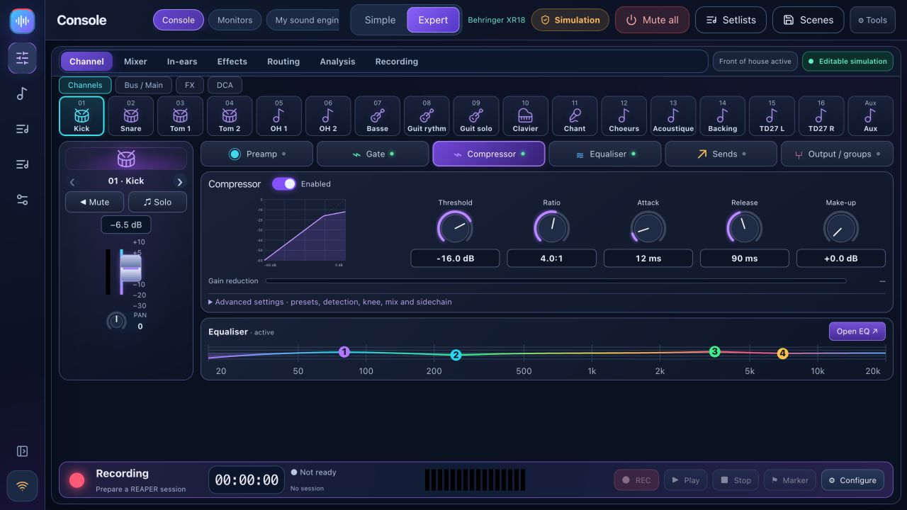

Sound-check coach
Six steps: connect, map instruments, measure gain, troubleshoot, prepare monitors and save. The coach reads mixer measurements, not your audio.
Prepare your sound check, keep your mixer in view, give each musician their own monitor mix and rehearse with backing tracks. Free, local and built for bands.
XR18 / X18 · MR18 · XR12 / MR12 · partial X32 — see capabilities and validation below.

Link a complete scene and notes to each band, then review changes before recall. Musicians can check their assigned bus and source signal from their phone and recall their latest mix. Sound Workshop adds kick and bass A/B comparison. Connection diagnostics separate network, control and REAPER bridge issues.
Musician cards, the patch list and a printable stage plot use the band’s input and monitor assignments.
Release notesTry source-specific effects for backing vocals and instruments with a separate level for each monitor. Sound Workshop adds A/B listening and measured advice from a REAPER excerpt.
Release notesFrançais · English · Italiano · Español · Deutsch
Switch in Settings → Options · Language, without restarting. Menus, controls, help and confirmations follow your choice. Each musician can also select their language on their phone.
The preference is saved on this device; your song, scene and musician names stay unchanged. More languages can be added on request. Request a language
The current BandPilot 2.2.4 design: colour-coded channels, processing and personal monitors. Click a screenshot to enlarge it. Detailed screenshots below are in French.


Personal layouts remember visible strips, strip width and output-panel visibility by mixer model and screen size. The monitor desk brings each musician’s mix, bus EQ and compressor together.
REAPER bridge 1.2.3 isolates concurrent requests and retries transient file locks without repeating Record.
Explore 2.2.2 →Advanced features depend on the mixer. The matrix explains what is available and what remains experimental.
Six steps: connect, map instruments, measure gain, troubleshoot, prepare monitors and save. The coach reads mixer measurements, not your audio.

Compact navigation, channel banks, main mix, buses, DCAs and channel processing. Preamp, gate, compression, EQ, sends, effects and routing depend on the model.
A personal QR link for each musician and their bus only. Faders, mute, saved profiles and capped levels. Control permissions refresh without reloading.
With backing tracks or band only: sections, takes, waveforms, presence, original playback, loops and markers. Requires REAPER bridge 1.2.3.
Prepare a session, select tracks, record 24-bit WAV and monitor transport. Multitrack USB on XR18/MR18/X18; XR12/MR12 use a stereo USB-stick recorder.

Song library, setlists, rehearsals and notes stored on your computer. Show transport, sections and song endings with configured REAPER/ReaCue.
Capture mixer state, import/export JSON, preview changes and keep a backup before recall. Guided scene recall excludes phantom power by default.
X-Air meters and spectrum, A/B advice, optional accounts and diagnostics. Optional connected AI uses your own key; ReaCue and native scenes have documented limits.

Simulation lets you explore and prepare settings. Simulated levels are never presented as real measurements. REAPER remains a real audio application.
Discovery reads the mixer identity on your local network. Name, brand and controls adapt; unknown models are rejected. Connections start read-only.
| Model | Capabilities | Status in this release |
|---|---|---|
| Behringer XR18 / X18 | 16 mono strips + stereo Aux · 6 Aux outputs · 18×18 USB | Main family. Hardware checks performed on XR18; X18 still needs confirmation. |
| Midas MR18 | 16 mono strips + stereo Aux · 6 Aux outputs · 18×18 USB | Profile and protocol tested in simulation; hardware validation pending. |
| Behringer XR12 / Midas MR12 | 12 inputs · 4 mic preamps · 2 physical Aux outputs | Adapted UI and limits. Stereo USB-stick recording, no PC multitrack interface. Hardware validation pending. |
| Behringer X32 / Rack / Compact / Producer / Core | 32 channels · 16 buses · 8 DCAs · 6 matrices | EXPERIMENTAL / PARTIAL: mixing, EQ, core dynamics and sends. Full preamp, routing, FX, meters, scene and USB support unavailable. |
A montage of BandPilot 2.2 simulation screenshots, without audio or hardware control demonstration. Chapters and a transcript accompany the video.
Choose the right installer, explore simulation, connect read-only and prepare a backup.
Full guide →Six explained steps, real measurements, proposals to review, monitors and a saved scene.
Sound-check coach step by step →Install bridge 1.2.3, open your project, verify armed tracks, choose takes and loop a section.
REAPER →Installers are published together after Windows, macOS and Linux tests and startup checks. Check the release version on the downloads page.
BandPilot is the new name of XR18 Studio. Back up scenes before updating; legacy data identifiers are retained.
Yes. BandPilot is free and open source under the MIT license. REAPER is separate software with its own license.
No. Features depend on model and validation. X32 support is partial and experimental. Check the matrix before live use.
No. It reads available mixer settings, meters and measurements. Listening advice starts with your description and needs an ear check.
Local control works without internet or an account. Computer, mixer and phones must share a local network. Optional connected AI requires internet and your own API key.
BandPilot is its new name. The repository and legacy technical identifiers are retained to preserve history and data. Back up your scenes before updating.